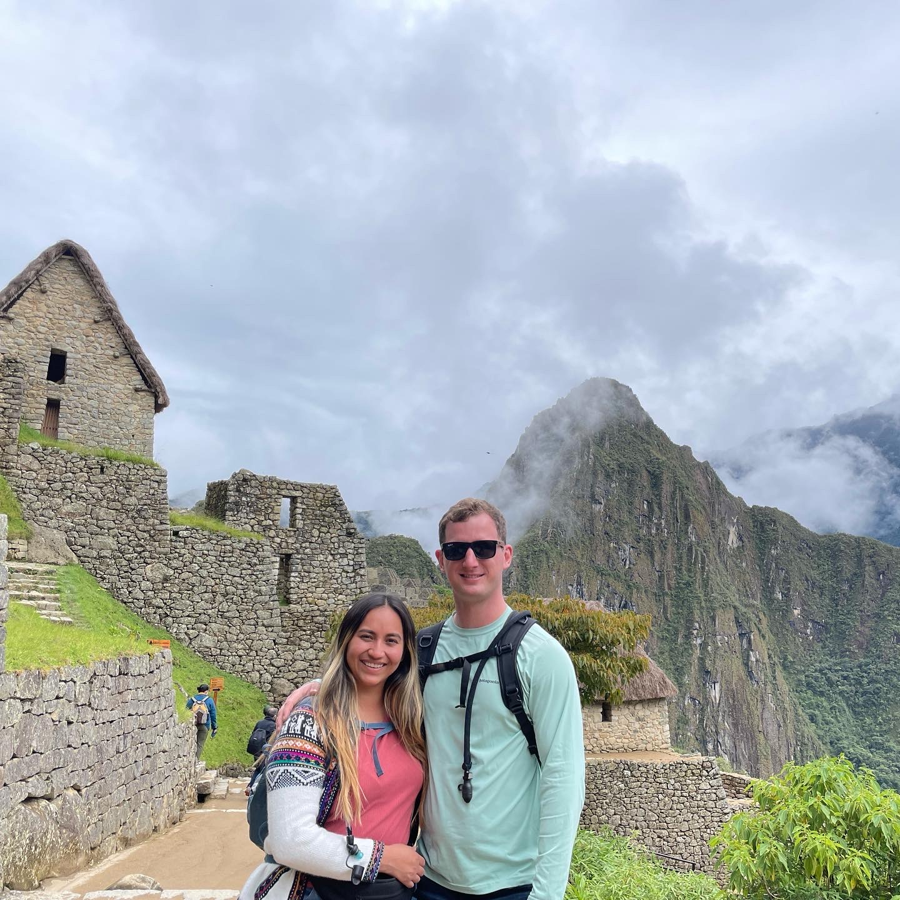

After waking up at 3:50am sitting in the high valley of Cusco at 11,000ft we caught a 2 van ride, to catch a 1.5 train ride, to catch a 30 minute van ride again, then to fianlly walk 10 minutes to catch a view of the beautiful lost city of the incas

As we stood within the complex of Maccu Piccu ("Old Mountain" in Quechua) under the shadow of Maccu Piccu mountain, we also behled the beauty and backdrop of Wainu Piccu ("Young Mountain" in Quechua). We marveled at the beauty and majesty that was constructed by a civilization without powerful construction tools, so high in the Andes Mountains, bordering the Amazon Jungle


Just like there were 500 years ago, when the upper class incans inhabited this hidden fortress, llamas grazed the slopes. It's possible their primordial instinctual brains remember what it was like when the Incan king would come and visit his special home at this site

It was an awesome an enlightening experience to be able to